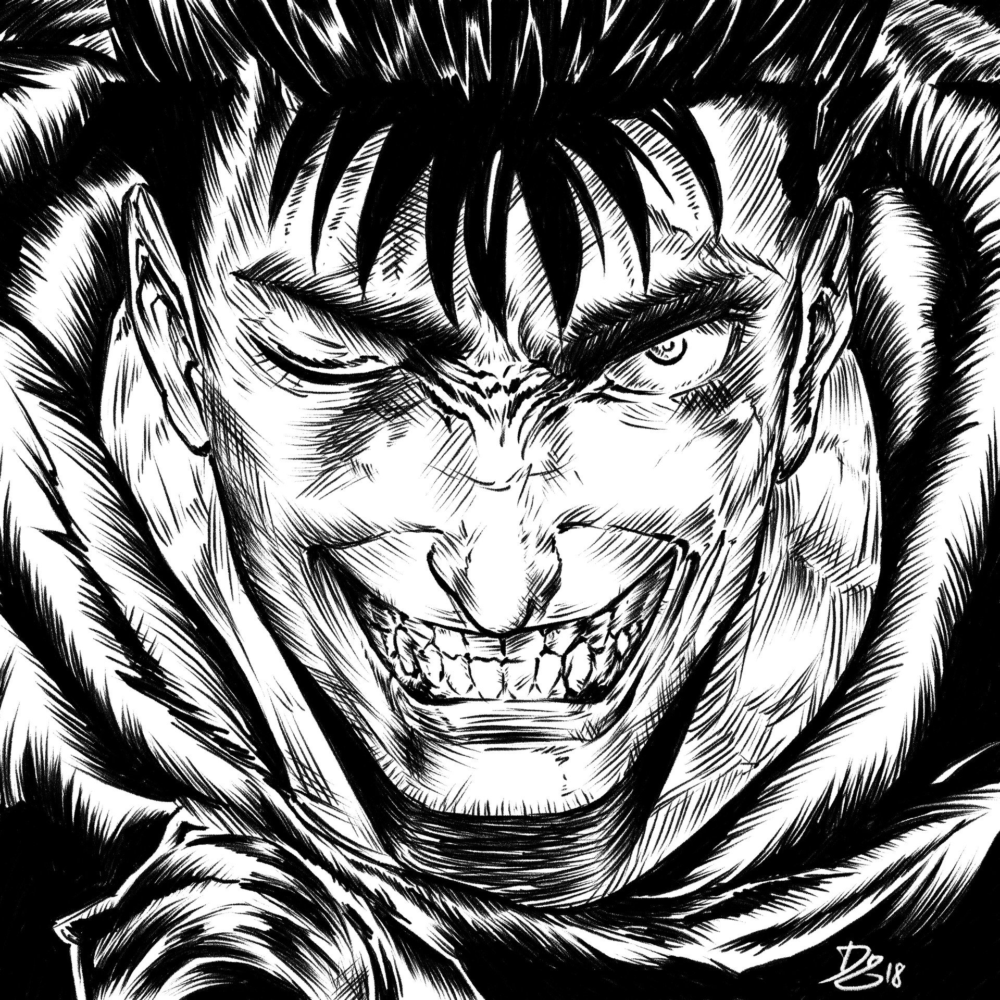

Овен 21 марта – 20 апреля

Телец 21 апреля – 21 маяБлизнецы 21 апреля – 21 маяРак 22 июня – 22 июляЛев 23 июля – 21 августаДева 22 августа – 23 сентябряВесы 24 сентября – 23 октябряСкорпион 24 октября – 22 ноябряСтрелец 23 ноября – 22 декабряКозерог 23 декабря – 20 январяВодолей 21 января – 19 февраляРыбы 20 февраля – 20 марта